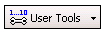
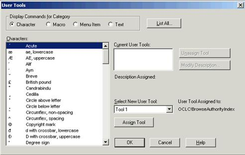
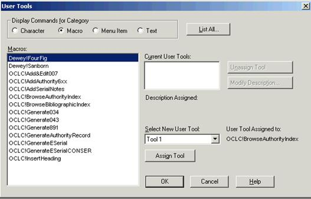

Contact
Princeton University Cataloging Documentation
Contact |
Princeton University Cataloging Documentation |
OCLC Return to OCLC main Customize toolbar Quick tools
|
User tools Assign up to 10 generic user tools to:
To assign user tool: Click the icon and name on the user tools quick tool,  or click the arrow to the right of the icon and name to expand a list, and then click Manage.  Different categories make different choices appear  •Select an item in the list. The list below the Display Commands for Category will show the available selections for that category. •Click Assign.
Note: You must click Assign Tool. If you only click OK, the user tool is not assigned. After you click Assign Tool, the OK button becomes a Close button. •When finished, click OK or Close press <Enter> to close the window. Use the quick tool Click the arrow and select a user tool in the list, or click Manage ... to open the User Tools window
NOTE: you must logoff and logon again for the change to take effect. |
| ©2008 Princeton University Last Modified 09/04/2008 |